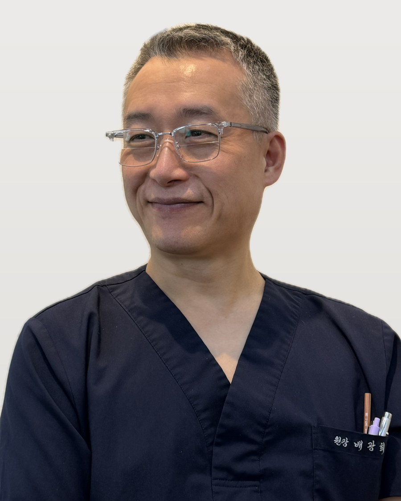
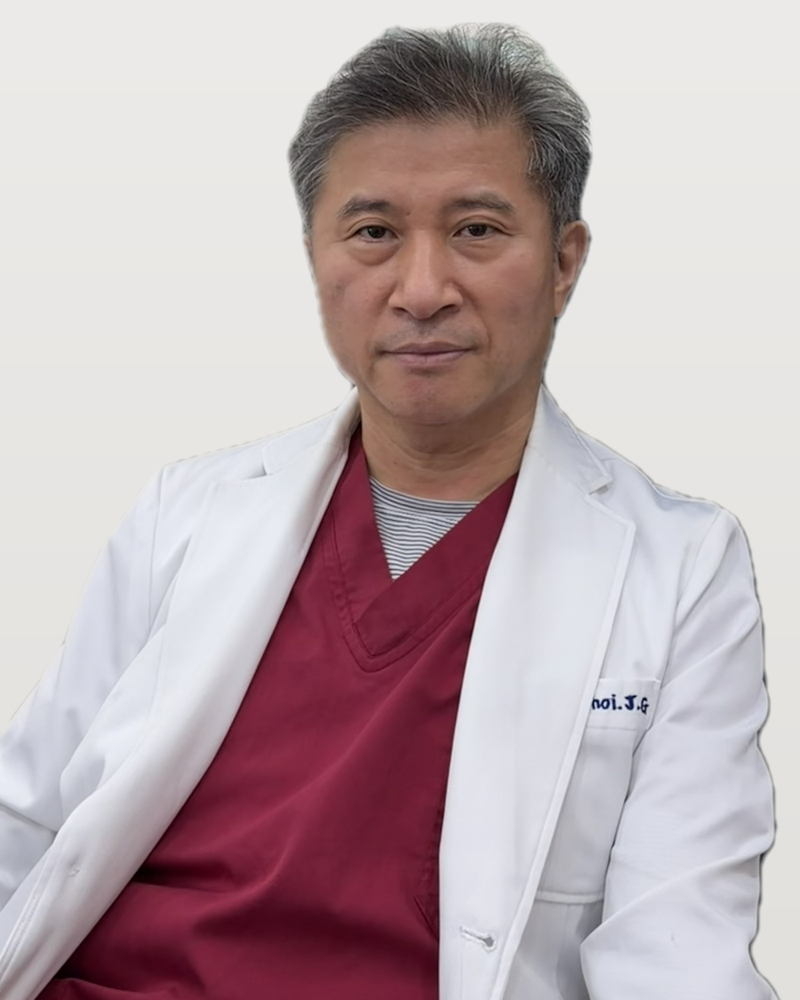
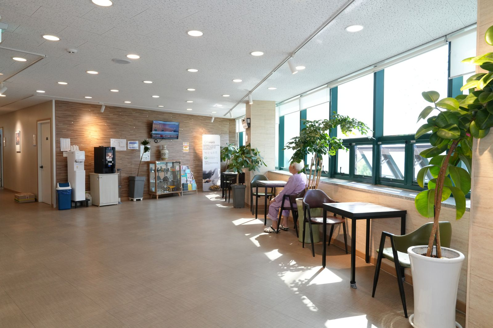
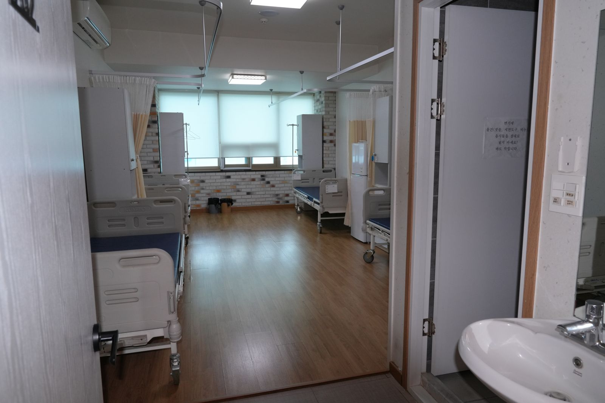
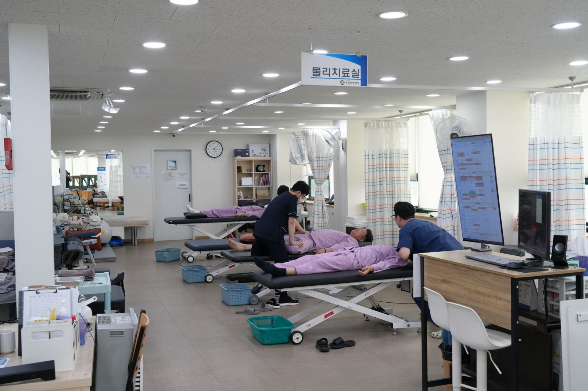

몸과 마음을
바르게 세우는
두암한방병원
한방과 일반진료의 협진 시스템으로
2대째 이어온 치료 노하우를 바탕으로
광주 동구에서 여러분의 건강을 지킵니다.
믿음직한 한방병원
한방과 현대의학의
조화로운 협진
두암한방병원은 한방 치료와 일반 진료를 함께 운영하는 협진 시스템으로, 환자 한 분 한 분에게 맞는 최적의 치료를 제공합니다.
한방부터 일반진료까지
통합 진료 서비스
계절·연령에 따라 권장 접종이 다르므로 방문 전 전화로 문의해 주세요.
그 밖의 서류도 발급 가능하며, 자세한 내용은 접수처에 문의해 주세요.
다양한 치료법으로
근본적인 회복
직접 경험하신
환자분들의 이야기
친절한 의료진과 효과적인 치료로
높은 만족도를 유지하고 있습니다.
교통사고 이후 목과 어깨 통증이 심했는데, 침 치료와 도수치료를 병행하며 빠르게 회복됐어요. 의사 선생님께서 꼼꼼하게 설명해 주셔서 신뢰가 갔습니다.
허리 통증으로 여러 병원을 다녀봤는데 이곳이 제일 효과가 좋았어요. 대기 시간도 짧고 직원분들 모두 친절해서 편하게 다니고 있습니다.
토요일에도 진료해 주셔서 정말 편해요. 한방 치료와 함께 생활 습관까지 상담해 주셔서 전반적인 건강이 많이 좋아졌어요.
진료 시간
| 요일 | 진료 시간 | 접수 마감 | 상태 |
|---|---|---|---|
| 월 ~ 금 | 09:00 – 17:30 점심 12:00–14:00 | 17:00 | 진료 |
| 토요일 | 09:00 – 12:30 | 12:00 | 진료 |
| 일요일 | — | — | 휴진 |
| 공휴일 | 사전 문의 | — | 문의 |
- 점심시간(12:00 ~ 14:00)에는 진료가 중단됩니다
- 공휴일 진료 여부는 사전에 전화로 확인해 주세요
- 토요일은 오전 진료만 운영합니다
교통사고 후 72시간 이내 내원 시 자동차보험 처리가 원활합니다. 치료비 걱정 없이 방문해 주세요. 교통사고클리닉 보기 →
찾아오시는 방법
두암3동 행정복지센터, 광주은행 인근
광주 도심에서 접근 편리
한방과 현대의학이 만나는 곳
두암한방병원
2대째 이어온 한방 노하우와 일반진료 협진 시스템으로, 광주 동구에서 환자 한 분 한 분에게 맞는 치료를 제공합니다.
2대째, 정직한 진료로 곁을 지키겠습니다

안녕하세요. 두암한방병원 병원장 배광희입니다.
2대째 한의학을 지켜오고 있는 두암한방병원은 환자분들의 건강과 치유를 위해 하루하루 정진하고 있습니다.
언제든 편하게 찾아주세요. 감사합니다.
경험과 신뢰의 의료진
침구·한약·추나 등 한방 치료를 담당합니다. 환자 한 분 한 분의 상태에 맞춰 치료 계획을 세워 회복을 돕습니다.

양방 진료를 담당합니다. 정확한 진단을 바탕으로 한·양방 통합 치료 계획을 세워 환자를 살핍니다.
편안한 치료 환경



진료 시간 및 과목
| 요일 | 진료 시간 | 접수 마감 | 상태 |
|---|---|---|---|
| 월 ~ 금 | 09:00 – 17:30 (점심 12:00–14:00) | 17:00 | 진료 |
| 토요일 | 09:00 – 12:30 | 12:00 | 진료 |
| 일요일 | — | — | 휴진 |
| 공휴일 | 사전 문의 | — | 문의 |
찾아오시는 방법
두암3동 행정복지센터, 광주은행 인근
정밀한 진단과 치료 장비
숨은 원인까지 살피는 정밀 검사
통증의 근본 원인을 바로잡는
척추·관절 치료
침·약침·추나요법과 도수·물리치료를 결합한 비수술 통합 치료로 척추와 관절의 균형을 회복합니다.
허리디스크 (요추 추간판탈출증)
허리디스크는 척추뼈 사이의 추간판(디스크)이 밀려 나와 신경을 압박하면서 통증을 일으키는 질환입니다.
두암한방병원은 약침·침 치료로 염증을 가라앉히고, 추나요법과 견인 치료로 디스크에 가해지는 압력을 줄여 비수술적으로 회복을 돕습니다.
- 허리에서 다리로 뻗치는 방사통
- 오래 앉아 있으면 심해지는 통증
- 다리 저림·감각 저하
- 기침·재채기 시 통증 악화
퇴행성 디스크
나이가 들면서 디스크의 수분이 줄고 탄력이 떨어져 발생하는 만성 통증 질환입니다. 갑작스러운 통증보다 은근하고 지속적인 뻐근함이 특징입니다.
퇴행이 진행된 척추는 무리한 자극보다 꾸준한 관리가 중요합니다. 한약·뜸으로 기혈을 보강하고 운동치료로 주변 근육을 강화합니다.
- 아침에 특히 뻣뻣한 허리
- 오래 서 있거나 걸으면 심해지는 통증
- 자세를 바꿀 때 느껴지는 불편감
척추측만 · 전만 · 후만증
척추가 옆으로 휘거나(측만), 앞뒤 곡선이 무너진(전만·후만) 상태로, 자세 불균형과 통증의 원인이 됩니다.
추나요법으로 틀어진 척추와 골반을 교정하고, 자세 교정 운동을 병행해 균형을 회복합니다.
- 양쪽 어깨·골반 높이가 다름
- 서 있을 때 한쪽으로 기우는 느낌
- 장시간 자세 유지가 어려움
요추염좌 (삔 허리)
무리한 동작이나 잘못된 자세로 허리 근육·인대가 손상된 상태입니다. 급성기에는 빠른 염증 관리가 회복 속도를 좌우합니다.
침·부항으로 긴장된 근육을 풀고 어혈을 제거하며, 물리치료로 빠른 회복을 돕습니다.
- 갑자기 삐끗한 후 움직이기 힘든 허리
- 특정 동작에서 날카로운 통증
- 허리를 굽히거나 펴기 어려움
목디스크 (경추 추간판탈출증)
경추 디스크가 신경을 눌러 목·어깨·팔로 이어지는 통증과 저림을 유발합니다. 스마트폰·컴퓨터 사용 증가로 젊은 층에서도 흔합니다.
약침과 추나로 경추 정렬을 바로잡고, 어깨·목 주변 근육의 긴장을 풀어줍니다.
- 목에서 어깨·팔로 퍼지는 통증
- 손가락 저림·감각 이상
- 목을 돌릴 때 뻐근함과 통증
퇴행성 목디스크
경추의 퇴행으로 디스크 간격이 좁아지고 뼈가 변형되며 만성적인 목 통증과 두통을 동반하는 질환입니다.
한약·뜸으로 기혈을 보강하고, 꾸준한 자세 교정과 운동치료로 진행을 늦춥니다.
- 만성적인 목·뒷머리 통증
- 오후로 갈수록 심해지는 뻐근함
- 목 움직임의 제한
거북목 · 일자목
장시간 고개를 숙이는 생활습관으로 경추의 정상 곡선이 사라진 상태입니다. 방치하면 목디스크로 진행될 수 있습니다.
추나·도수치료로 경추 곡선을 회복하고, 생활 습관 교정과 스트레칭을 함께 지도합니다.
- 옆에서 보면 앞으로 나온 목
- 어깨와 뒷목의 만성 결림
- 쉽게 피로해지는 목과 눈
수술 그 이후,
온전한 회복을 위한 재활
수술로 끝나지 않는 회복. 한방 치료와 체계적인 재활 프로그램으로 일상으로의 복귀를 돕습니다.
추나요법
한의사가 손과 기구를 이용해 틀어진 척추와 관절, 근육을 바로잡는 한방 수기 치료입니다. 수술 후 무너진 신체 균형을 회복하는 데 효과적입니다.
도수치료
관절과 연부조직을 직접 다루어 통증을 줄이고 기능을 회복시키는 도수 치료입니다. 굳은 관절을 부드럽게 풀고 정상 움직임을 되찾도록 돕습니다.
- 수술 부위 주변의 관절 강직 완화
- 연부조직 유착 개선
- 통증 없는 정상 가동 범위 회복
수술 후 맞춤 한약처방
수술로 약해진 기력과 회복력을 보강하기 위해 개인 체질과 회복 상태에 맞춘 한약을 처방합니다. 어혈 제거, 면역력 회복, 조직 재생에 도움을 줍니다.
체질 진단과 회복 상태 확인 후 처방하므로, 내원 상담을 권장합니다.
입원집중치료
통원이 어렵거나 집중적인 재활이 필요한 환자를 위해 입원 치료 프로그램을 운영합니다. 침·한약·물리·운동치료를 하루 일정으로 집중 제공합니다.
- 하루 단위 집중 재활 프로그램
- 교통사고·수술 후 회복기 환자 적합
- 자동차보험·실손보험 상담 가능
재활 장비 소개
수술 후 회복 단계에 맞춰 재활 장비를 활용해 통증 완화와 근력·균형 회복을 돕습니다. 상태에 따라 다음 장비를 병행합니다.
- 척추 견인기 — 감압 견인으로 디스크 부담 완화
- 체외충격파 — 만성 통증·염증 부위 치료
- 전기 자극 치료기 — 근육 이완과 통증 완화
- 운동치료 기구 — 단계별 근력·균형 회복
자세한 장비 안내는 병원소개 > 의료장비에서 확인하실 수 있습니다.
교통사고 후유증,
초기 치료가 중요합니다
사고 후 남는 통증과 후유증. 한방과 재활치료를 결합해 자동차보험으로 부담 없이 치료받으실 수 있습니다.
겉으로 드러나지 않는 후유증까지
교통사고 후에는 X-ray에 나타나지 않는 근육·인대 손상과 어혈이 남아 시간이 지나며 통증·두통·저림으로 이어질 수 있습니다.
두암한방병원은 침·약침·부항으로 어혈을 제거하고, 추나·물리치료로 틀어진 몸의 균형을 바로잡아 후유증을 최소화합니다.
- 목·어깨·허리 통증과 결림
- 두통·어지러움·메스꺼움
- 팔다리 저림과 감각 이상
- 불면·피로 등 사고 후 전신 증상
치료 과정
자동차보험 처리 안내
교통사고 치료는 자동차보험으로 처리되어 본인 부담 없이 치료받으실 수 있습니다. 복잡한 절차는 병원에서 안내해 드립니다.
사고 접수번호만 있으면 되며, 접수번호가 없어도 먼저 내원해 상담하실 수 있습니다.
자주 묻는 질문
Q 접수번호가 없어도 치료가 되나요?
네, 먼저 내원해 상담 후 보험사 접수를 진행할 수 있습니다.
Q 한방 치료도 보험 처리가 되나요?
침·약침·추나·한약 등 교통사고 한방 치료도 자동차보험 적용 대상입니다.
Q 통원 치료만 가능한가요?
통원과 입원 모두 가능하며, 증상에 따라 의료진과 상의해 결정합니다.
여성의 건강과 아름다움을
한방으로 케어합니다
체질에 맞춘 한방 다이어트부터 산후조리, 갱년기 관리까지. 여성의 생애주기별 건강을 세심하게 돌봅니다.
한방 다이어트
굶는 다이어트가 아닌, 체질과 몸 상태에 맞춘 건강한 감량을 돕습니다. 한약으로 식욕과 신진대사를 조절하고, 체성분 분석으로 변화를 관리합니다.
요요 없이 건강하게, 무너진 몸의 균형을 함께 회복합니다.
- 체질별 맞춤 한약 처방
- 체성분 분석 기반 관리
- 식욕·대사 조절로 요요 방지
산후조리
출산 후 약해진 기혈을 보강하고 부종·관절 통증·산후풍을 예방하는 한방 관리입니다. 산모의 빠른 회복과 체력 보강을 돕습니다.
출산 후 회복 상태에 따라 처방이 달라지므로, 내원 상담을 통해 시작 시기를 정하는 것이 좋습니다.
산후 다이어트
출산 후 늘어난 체중과 변화된 체형을 건강을 해치지 않는 범위에서 회복하도록 돕습니다. 수유 여부를 고려한 맞춤 관리를 제공합니다.
- 수유 상태를 고려한 안전한 관리
- 골반·체형 교정 병행
- 산후 부종 개선
갱년기 관리
호르몬 변화로 인한 안면홍조·불면·우울감·피로 등 갱년기 증상을 한약과 침 치료로 완화합니다. 몸과 마음의 균형을 되찾도록 돕습니다.
- 안면홍조·식은땀 완화
- 불면·불안·우울감 개선
- 기력 저하와 만성피로 회복
쉬어도 풀리지 않는 피로,
몸의 균형을 회복하세요
충분히 쉬어도 회복되지 않는 만성피로. 한약·침 치료와 영양 주사요법으로 떨어진 활력을 되찾도록 돕습니다.
만성피로 클리닉
만성피로는 단순한 피곤함이 아니라 기혈 부족, 면역 저하, 자율신경 불균형 등 몸의 신호일 수 있습니다. 원인을 살펴 체질에 맞는 한약과 침 치료로 근본적인 회복을 돕습니다.
- 자고 일어나도 개운하지 않음
- 오후만 되면 급격히 떨어지는 기력
- 집중력 저하와 잦은 두통
- 면역력 저하로 자주 아픔
주사요법
비타민·영양 성분을 직접 공급하는 주사요법으로 빠른 활력 회복과 면역 보강을 돕습니다. 한방 치료와 병행해 시너지를 높입니다.
장기간 피로가 누적된 분, 환절기 면역 관리가 필요한 분, 회복기 체력 보강이 필요한 분께 권합니다.
자율신경의 균형을 살피는
한방 면역 관리
암 치료 과정에서 떨어지는 체력과 면역, 흐트러지기 쉬운 자율신경의 균형을 한방으로 보강합니다. 표준 치료를 돕는 보조적 관리에 집중합니다.
치료 과정을 견디는 힘을 더합니다
항암·방사선 치료 과정에서 나타나는 피로·소화장애·면역 저하와 흐트러진 자율신경의 균형을 한방으로 관리합니다. 환자 개인의 체질과 회복 상태에 맞춰 침·뜸·한약 처방으로 컨디션 유지를 돕습니다.
치료가 까다로운 환자의 체력 보강과 증상 완화를 함께 살피며, 식욕 저하와 전신 쇠약을 세심하게 관리합니다.
- 항암·방사선 치료 중 체력·식욕 관리
- 소화 장애 및 전신 증상 완화
- 자율신경 균형과 면역 컨디션 관리
- 개인 상태에 맞춘 한약 처방
두암한방병원 소식
진료 일정, 공지사항, 비급여 수가 안내와 치료 후기까지 — 병원의 새로운 소식을 전해드립니다.
공지사항
건강 칼럼
계절 건강, 교통사고 후유증, 생활 속 척추·관절 관리까지 — 환자분께 도움이 될 만한 건강 상식을 쉽게 풀어 전해드립니다.
계절건강 여름철 냉방병과 한방 관리
무더운 여름, 실내 냉방은 반가운 존재지만 지나치면 오히려 몸에 부담이 됩니다. 바깥의 더운 공기와 시원한 실내를 오가는 사이 몸이 급격한 온도 변화에 적응하지 못하면, 두통·몸살 기운·피로감·소화 불편처럼 여러 증상이 함께 나타나기 쉽습니다. 흔히 '냉방병'이라 부르는 상태로, 우리 몸의 자율신경이 온도 조절에 지쳐가는 신호로 볼 수 있습니다.
한방에서는 이런 증상을 몸의 순환과 자율신경의 균형이 흐트러진 상태로 보고 접근합니다. 침·뜸·한약 등을 통해 기혈 순환을 돕고 몸의 균형을 잡아가면, 냉방으로 지친 몸의 회복에 도움을 줄 수 있습니다. 증상과 체질에 따라 관리 방법은 달라지므로, 오래 지속되거나 반복된다면 진료를 통해 원인을 함께 살펴보시길 권합니다.
생활 속에서는 실내외 온도차를 5~6도 이내로 유지하고, 얇은 겉옷으로 목·어깨를 보호하며, 따뜻한 물을 자주 마시는 것이 도움이 됩니다. 냉방이 오래 이어지는 날에는 가벼운 스트레칭으로 몸을 자주 움직여 주세요. 그래도 피로와 무기력이 쉽게 가시지 않는다면 만성피로 관리와 함께 살펴보는 것이 좋습니다.
교통사고 교통사고 후유증, 왜 며칠 뒤에 나타날까
가벼운 접촉 사고라도 "그때는 괜찮았는데 며칠 뒤부터 아프기 시작했다"는 이야기를 자주 듣습니다. 사고 직후에는 긴장과 흥분으로 몸이 통증을 잘 느끼지 못하는 경우가 많기 때문입니다. 시간이 지나 긴장이 풀리면서, 그제야 목·어깨·허리의 뻐근함과 통증이 서서히 드러나는 것입니다.
사고의 충격은 뼈에 이상이 없더라도 근육과 인대에 미세한 손상을 남기고, 한방에서는 이때 몸에 뭉친 '어혈(瘀血)'이 순환을 방해한다고 봅니다. 이런 후유증은 눈에 잘 띄지 않아 방치하기 쉽지만, 초기에 관리하지 않으면 두통·저림·만성적인 뻐근함으로 오래 이어질 수 있습니다.
그래서 사고 후에는 특별한 통증이 없더라도 상태를 한번 살펴보는 것이 좋습니다. 두암한방병원 교통사고클리닉에서는 침·약침·추나·한약 등을 상태에 맞춰 병행하며, 이러한 한방 치료는 자동차보험 적용 대상입니다. 조기에 관리를 시작하는 것이 회복에 도움을 줄 수 있습니다.
생활건강 앉아서 일하는 직장인의 목·허리 관리법
하루의 대부분을 책상 앞에서 보내는 분이 많습니다. 오래 앉아 있는 자세는 편해 보이지만, 실제로는 목과 허리에 꾸준히 부담을 줍니다. 특히 모니터를 향해 머리를 앞으로 내미는 자세가 반복되면 거북목으로 이어지기 쉽고, 허리를 구부정하게 두는 습관은 척추 사이 디스크에 압력을 더합니다.
목·어깨가 자주 뻐근하거나, 팔이 저리고, 오후만 되면 허리가 무겁게 느껴진다면 몸이 보내는 신호일 수 있습니다. 이런 증상을 대수롭지 않게 넘기다 보면 통증이 점점 자주, 오래 찾아올 수 있으니 초기의 생활 관리가 중요합니다.
일할 때는 모니터 위쪽을 눈높이에 맞추고, 엉덩이를 의자 깊숙이 붙여 허리를 곧게 세우는 것이 좋습니다. 50분마다 한 번씩 일어나 목을 부드럽게 돌리고 어깨를 펴는 스트레칭을 해 주세요. 그래도 저림이나 통증이 이어진다면, 척추·관절 진료를 통해 상태를 정확히 확인하고 관리 방향을 잡아 보시길 권합니다.
비급여 진료 수가 안내
| 항목 | 설명 | 비용 |
|---|---|---|
| 한약 (첩약) | 체질 맞춤 처방, 1개월 기준 | 상담 후 안내 |
| 약침 치료 | 경혈 약침 시술 | 상담 후 안내 |
| 추나요법 | 척추·관절 교정 (보험 적용 항목 별도) | 상담 후 안내 |
| 매선 리프팅 | 안면 매선 시술 | 상담 후 안내 |
| 제증명서 | 진단서·통원확인서 등 | 항목별 상이 |
진료 문의
궁금한 점을 남겨주시면 확인 후 연락드립니다. 빠른 상담은 전화를 이용해 주세요.
치료 후기
교통사고 후유증으로 고생했는데 침과 도수치료를 함께 받고 많이 좋아졌어요. 친절하게 설명해 주셔서 믿고 다녔습니다.
허리디스크로 여러 곳을 다녀봤지만 여기가 제일 효과 좋았어요. 대기 시간도 짧고 만족합니다.
토요일 진료가 있어 직장인에게 정말 편해요. 한약 먹고 만성피로가 한결 나아졌습니다.